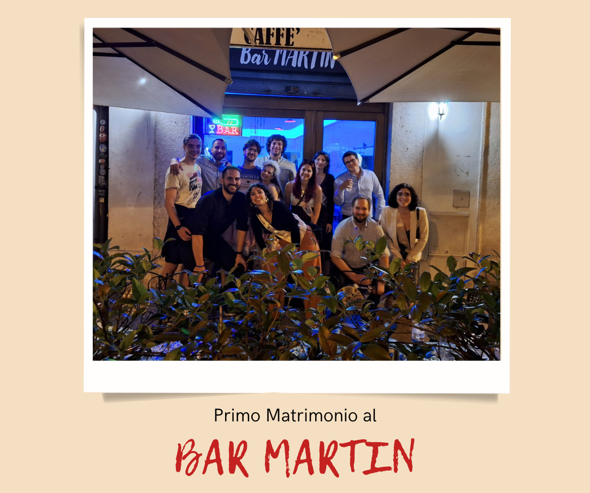
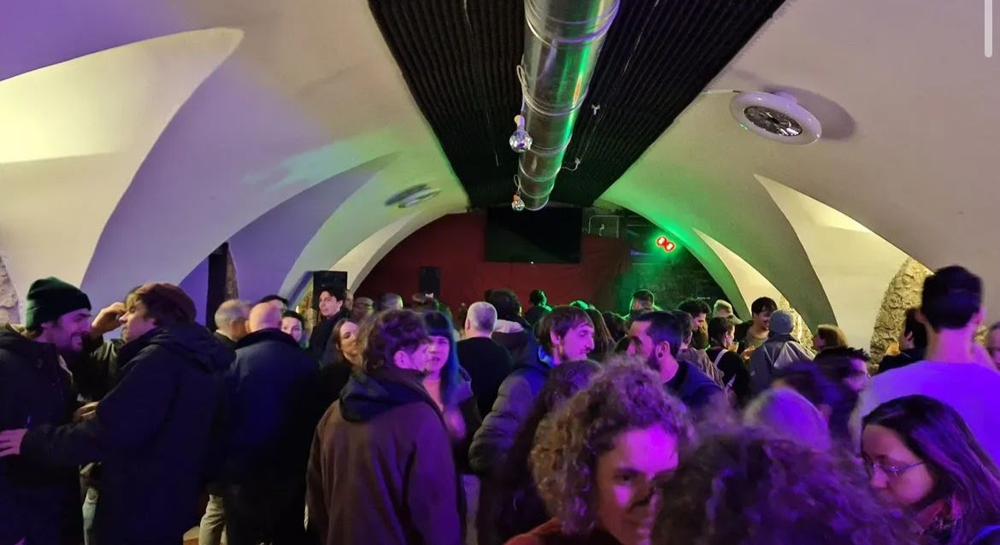
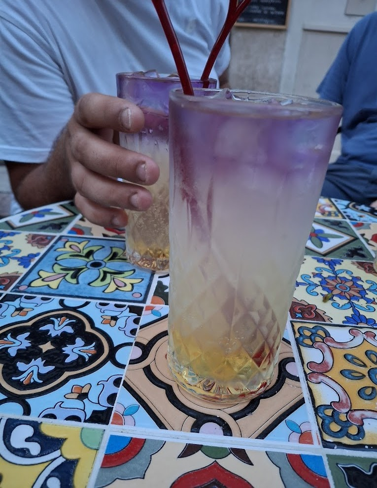
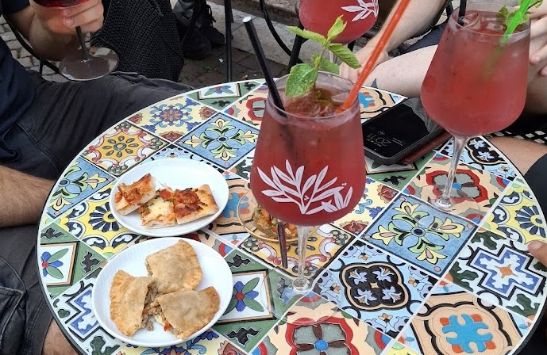
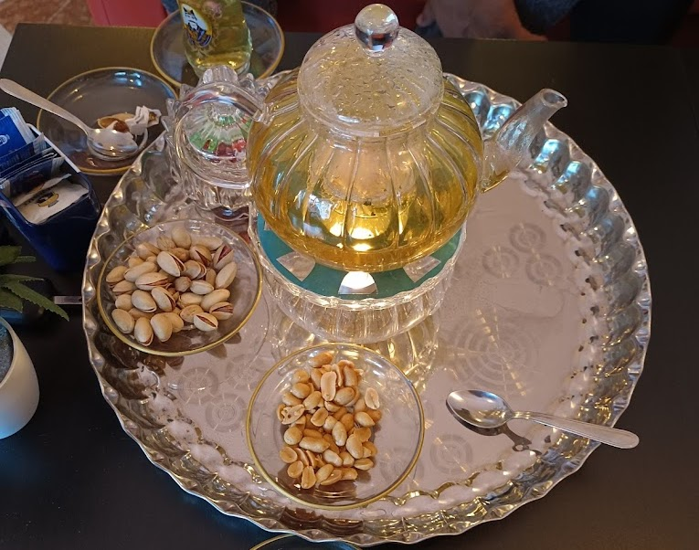
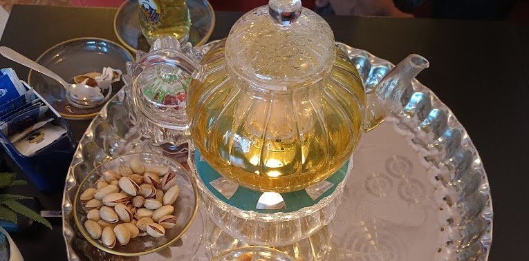

Shisha & narghilè
Una proposta perfetta per gruppi di amici, Erasmus e serate tranquille ma diverse dal solito aperitivo.
Disco bar · Shisha · Tè iraniano
Shisha, tè caldo iraniano, cocktail e una sala interna per serate, compleanni, lauree ed eventi privati.
Una proposta perfetta per gruppi di amici, Erasmus e serate tranquille ma diverse dal solito aperitivo.
Uno dei dettagli più riconoscibili del locale: menta, zafferano, tè nero, verde e Damnosh.
Spazio interno per feste private, compleanni, lauree, musica e format sociali su prenotazione.
Eventi
Le informazioni essenziali per chi apre il sito da telefono: cosa succede, quando e come prenotare.
Atmosfera
Esterno, sala eventi, cocktail e tè iraniano: i punti forti del locale in immagini vere.






Dove siamo
In centro storico, comodo per gruppi, studenti e serate dopo cena.
Contatti
Scrivi o chiama il locale per tavoli, shisha, feste private ed eventi.